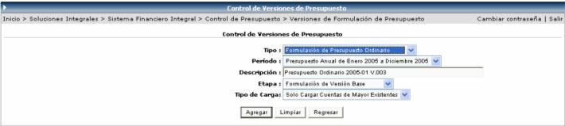
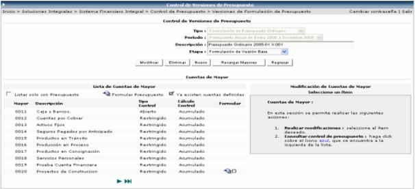
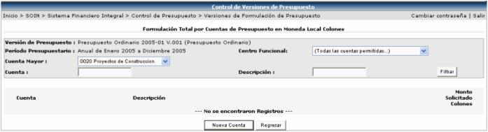
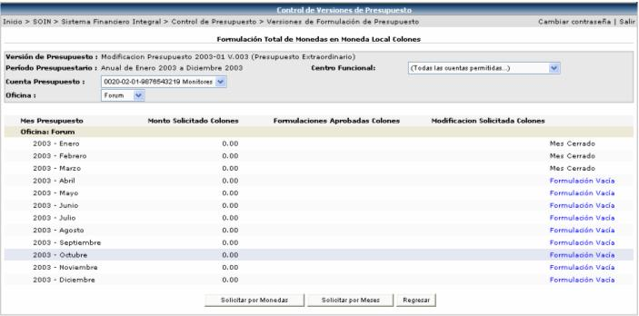

En esta sección se crean nuevos presupuestos para un periodo determinado y también se pueden establecer diferentes presupuestos para un mismo período asignando a cada uno de ellos una versión, lo que permite realizar un análisis financiero para evaluar cual opción es la que mejor conviene para su posterior ejecución.
Se debe de escoger el tipo de formulación ya sea Ordinaria (original) o una Modificación, el periodo presupuestario (en caso de que el tipo de formulación sea ordinaria, se mostrarán solamente los periodos inactivos y si es una modificación se mostrarán los periodos abiertos solamente).Luego el sistema le sugiere una descripción, la cual puede ser modificada por el usuario; también se debe de asociar una etapa ya sea base, de usuario, o final y por último seleccionar el tipo de carga a realizar (si es de tipo Ordinaria, solamente se cargarán cuentas de mayor existentes y si es una modificación se pueden cargar solo cuentas de mayor existentes o cargar montos ya aprobados durante el periodo):

Luego se presiona el botón
 para guardar la información y seguir con el detalle de
las cuentas:
para guardar la información y seguir con el detalle de
las cuentas:

En esta sección se pueden realizar las siguientes acciones:
1. Realizar modificaciones de definición
para las cuentas hijas que se agregarán en la pantalla se despliega al
presionar el ícono (botón Nueva cuenta y luego botón Agregar),
para poder cambiarle el tipo de control, el método de cálculo y la máscara
(la máscara, básicamente solo se puede cambiar cuando es una Versión de
Presupuesto Ordinario (o sea, en Modificación Presupuestaria no se puede
cambiar)). Cambiar la máscara de la Cuenta de Mayor es para utilizar una
nueva estructura presupuestaria para el siguiente Período de Presupuesto.
De todas maneras, al cambiar la estructura presupuestaria se debe mantener
la misma estructura contable de la mascara anterior, lo que significa
que casi nunca hay mascara por cual cambiar. Si no se cambia la definición,
las que tiene serán las Default para las cuentas hijas.
(botón Nueva cuenta y luego botón Agregar),
para poder cambiarle el tipo de control, el método de cálculo y la máscara
(la máscara, básicamente solo se puede cambiar cuando es una Versión de
Presupuesto Ordinario (o sea, en Modificación Presupuestaria no se puede
cambiar)). Cambiar la máscara de la Cuenta de Mayor es para utilizar una
nueva estructura presupuestaria para el siguiente Período de Presupuesto.
De todas maneras, al cambiar la estructura presupuestaria se debe mantener
la misma estructura contable de la mascara anterior, lo que significa
que casi nunca hay mascara por cual cambiar. Si no se cambia la definición,
las que tiene serán las Default para las cuentas hijas.

Tipo de Control:
Abierto: No provoca NRP, no provoca excesos y puede tener Disponibles Reales Negativos
Restringido: el disponible neto negativo provoca NRPs
Los NRPs con Disponibles Netos negativos pueden aprobarse
Los NRPs aprobados con Disponibles Reales negativos provocan Excesos [ME]
Con módulo Origen Abierto y Disponibles Reales negativos provocan Excesos [ME]
Restrictivo: el disponible neto negativo provoca NRPs
Los NRPs con Disponibles Netos negativos NO pueden aprobarse
Con módulo Origen Abierto y Disponibles Reales negativos provocan Excesos [ME]
Calculo de Control:
Mensual: es únicamente el DISPONIBLE del mes.
Acumulado: es la suma del DISPONIBLE del inicio del período al mes.
Total Periodo: es la suma de DISPONIBLE de todo el Período.
2. Consultar el control del presupuesto:
haciendo click sobre el ícono que se encuentra a la derecha
de la cuenta en la lista:
que se encuentra a la derecha
de la cuenta en la lista:
Pantalla #1:

Al presionar el botón , se presenta la siguiente pantalla donde se puede agregar una cuenta nueva. La misma se agregará a la lista de la Pantalla #1:

Cuando se selecciona una cuenta de la Pantalla #1, se presenta la siguiente pantalla donde se puede formular el presupuesto, solicitando por moneda o por mes:

Si se hace click sobre un mes específico,
se presenta la siguiente pantalla que es la misma que se muestra si se
presiona el botón  , donde se ingresa el monto a solicitar:
, donde se ingresa el monto a solicitar:

Pero si se presiona el botón  , se presenta la siguiente pantalla, donde se ingresan los
montos a solicitar y la moneda se selecciona en el combo que se encuentra
en la parte superior izquierda de la pantalla
, se presenta la siguiente pantalla, donde se ingresan los
montos a solicitar y la moneda se selecciona en el combo que se encuentra
en la parte superior izquierda de la pantalla